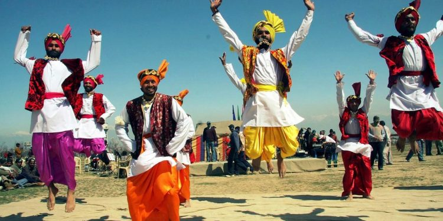

La música y la danza están presentes en los rituales de todas las culturas humanas conocidas. “El baile es un lenguaje, una expresión que emerge de una comunidad. […]. Si te sabes los pasos significa que perteneces al grupo”, expone la coreógrafa afroamericana Camille A. Brown en una charla TED que repasa la cohesión social a través del baile a lo largo de la historia. 
Aunque suele ser controvertida la forma en la que la Ciencia reduce nuestros comportamientos a procesos biológicos como la supervivencia y la reproducción, es importante considerar lo que algunos investigadores plantean para explicar nuestras formas de socializar. No cómo una explicación única e irrefutable, sino como una ruta más para entender algunos de nuestros comportamientos más comunes; considerar la información extraída de forma científica, como una pieza más, y muy importante, del rompecabezas que supone la complejidad humana.